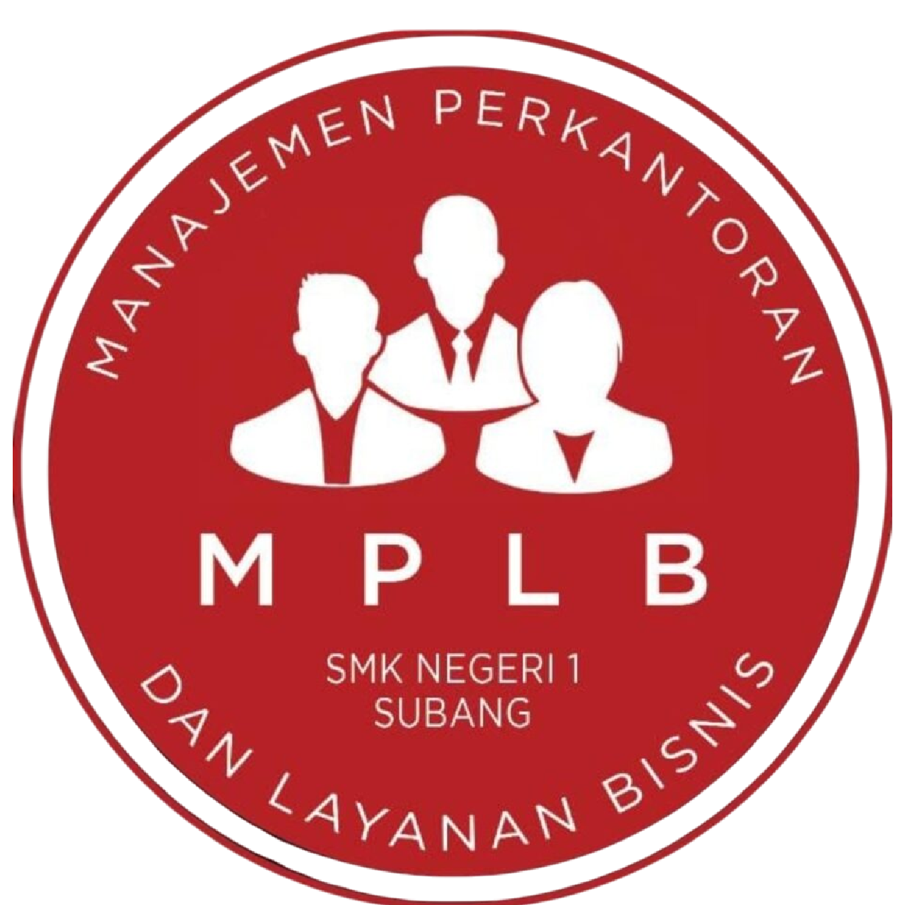
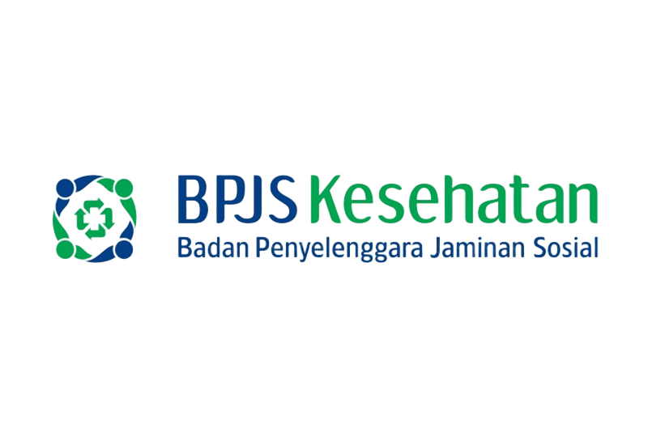

Managemen Perkantoran Dan Layanan Bisnis (MPLB)
Tentang MPLB
Managemen Perkantoran dan Layanan Bisnis merupakan program keahlian pada bidang bisnis dan manajemen dengan konsentrasi keahlian manajemen perkantoran, memberikan kontribusi dalam menjadikan peserta didik memiliki kompetensi keahlian sebagai: staf administrasi; resepsionis; asisten arsiparis; asisten sekretaris; layanan pelanggan; dan sebagai tenaga operator junior dibidang komputer dan managemen perkantoran serta wirausahawan yang tangguh dengan sikap bermatabat, berkualitas, dan terpercaya.
Materi yang Dipelajari
- Administrasi Perkantoran
- Korespondensi dan Kearsipan
- Manajemen Pelayanan Publik
- Pengelolaan Keuangan dan Aset
- Teknologi Perkantoran (Ms. Office, Google Workspace)
- Komunikasi Bisnis
- Manajemen Sumber Daya Manusia
- Pemasaran Digital dan Media Sosial
Prospek Karir Manajemen Perkantoran dan Layanan Bisnis
- Administrasi Perkantoran
- Resepsionis
- Asisten Manajer
- Staff HRD
- Sekretaris
- Manajer Operasional
- Customer Service
- Entrepreneur (Bisnis Administrasi)
Institusi Pasangan
